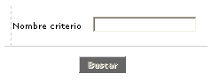
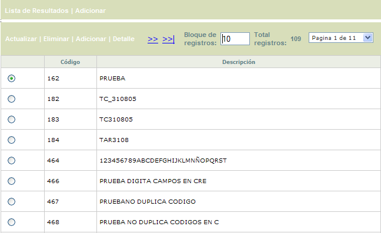
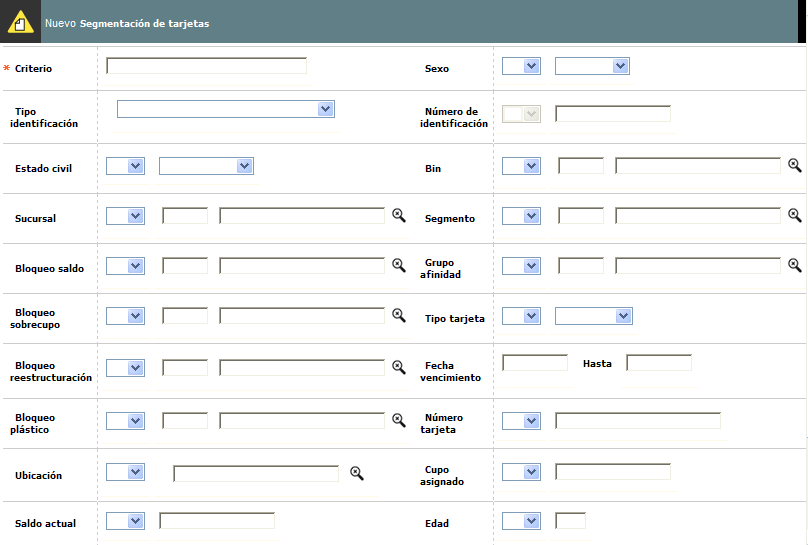
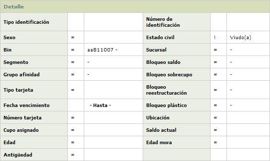

Segmentación de tarjetas
Esta opción facilita a la entidad el obtener información específica sobre los clientes y sus respectivos productos, mediante la creación de conjuntos de datos interrelacionados, para lo cual solo se necesita seleccionar los criterios requeridos. Dado el carácter reservado que algunas de las consultas realizadas pueda tener, la forma o pantalla permite al usuario que la genera, restringir el acceso a la misma.
Filtro: El formulario cuenta con un filtro inicial, que puede ser utilizado para agilizar la búsqueda de un Criterio.

|
Nombre criterio |
Si el usuario invoca el filtro, el sistema le debe permitir ingresar cualquier valor alfanumérico de máximo 30 caracteres. |
El formulario contiene los enlaces: Actualizar, Eliminar, Adicionar, y Detalle. Adicionalmente, cuenta en la parte superior con las opciones Lista de resultados y Adicionar.

Adicionar: Si el usuario invoca esta opción, se despliega un formulario con los siguientes campos, a través del cual se ingresa un nuevo Criterio.
Criterios: Mediante la combinatoria de este conjunto de campos la entidad define las condiciones que requiera para suplir sus necesidades de información. Los campos son de libre elección por parte de la entidad y por lo tanto no se requiere marcar todos los criterios para que la información sea suministrada, a excepción del campo Nombre de criterio, puesto que éste será el que permita identificar una consulta específica de las otras; debe tenerse presente que todos los campos permiten indicar si el resultado de la segmentación debe mostrar las tarjetas (productos) cuya característica sea igual (=) ó diferente (!=) al valor especificado por la entidad para cada criterio seleccionado, es decir, si deben ser incluídas o excluídas de la lista correspondiente.

|
Criterio |
Campo obligatorio en el que la entidad debe definir el nombre con el cual identificará dicha información cada vez que genere la consulta si así lo requiere. |
|
Sexo |
Campo en el cual la entidad selecciona a través de la lista de valores adjunta el género de los clientes (Masculino o Femenino) al que deben estar asociadas las tarjetas sobre las cuales desea generar la información. |
|
Tipo identificación |
Campo que contiene una lista de valores de los cuales la entidad escoge sobre cuál de ellos desea realizar la consulta. Una Vez seleccionado el tipo de documento el campo permite, aunque no lo requiere, que se le asigne un valor determinado, para generar la información deseada. Si no se asigna ningún valor la información obtenida corresponderá a todas las tarjetas pertenecientes a clientes cuya identificación sea igual o diferente al tipo de identificación seleccionado más las demás variables, si las hay. |
|
Número identificación |
Se define el número de identificación del cliente que se quiere consultar o en su defecto excluir de la selección. |
|
Estado civil |
En este campo se selecciona de la lista de valores adjunta el estado civil actual del cliente (Viudo, Soltero, Religioso, Divorciado, Casado u Otro) al que deben estar asociadas las tarjetas a incluír o excluir de la segmentación. |
|
Sucursal |
Campo en el cual la entidad selecciona de una lista de valores la sucursal a la que deben pertenecer las tarjetas para ser incluídas o excluídas de la lista. |
|
Tipo de tarjeta |
Este campo permite mediante una lista de valores adjunta seleccionar la clase a la cual debe pertenecer la tarjeta (Extendida, Adicional o Principal) para ser incluída o excluída de la segmentación. |
|
Bin |
Campo con lista de valores de la cual se selecciona el Bin al que debe pertenecer la tarjeta para ser incluída o excluída de la lista; este criterio puede combinarse con el Segmento y Grupo de Afinidad, que son los otros dos componentes del producto. |
|
Producto |
Campo con lista de valores de la cual se selecciona el Segmento al que debe pertenecer la tarjeta para ser incluída o excluída de la lista; este criterio puede combinarse con el Bin y Grupo de Afinidad, que son los otros dos componentes del producto. |
|
Grupo de afinidad |
Campo con lista de valores de la cual se selecciona el Grupo de Afinidad al que debe pertenecer la tarjeta para ser incluída o excluída de la lista; este criterio puede combinarse con el Bin y Segmento, que son los otros dos componentes del producto. |
|
Bloqueo saldo / sobrecupo / reestruturación / plástico. |
De acuerdo con los bloqueos aplicables a los productos, la entidad selecciona de la lista de valores contenida en cada uno, aquellos sobre los cuáles desea generar la información, es decir, la característica que deben tener las tarjetas en relación con cada tipo de bloqueo, para ser incluídas o excluídas de la lista. Dichos bloqueos se encuentran previamente definidos en la opción estados y bloqueos, del Núcleo. |
|
Fecha vencimiento / hasta |
En este campo la entidad establece un rango de fechas, en formato YYYYMM, de acuerdo con la fecha de vencimiento que deben tener los productos para ser incluídos o excluídos de la lista. |
|
Número tarjeta |
La entidad puede en un momento dado requerir información de un producto específico, por lo tanto, en este campo se capturará el número de la tarjeta sobre el cual se requiere generar la información, o en su defecto todos los productos diferentes al registrado. |
|
Ubicación |
Campo que contiene una lista de valores poblada previamente en la opción información geopolítica de las tablas corporativas del módulo núcleo, de la cual la entidad podrá definir la manera de generar la información de acuerdo con la ubicación geográfica de la dirección de correspondencia del cliente. |
|
Cupo asignado |
En este campo se indica un valor como punto de referencia y permite especificar si la condición a cumplir para ser incluído o excluído de la lista de segmentación es que el cupo de la tarjeta sea igual, diferente, menor o mayor al registrado en este campo. |
|
Saldo actual |
En este campo se indica un valor como punto de referencia y permite especificar si la condición a cumplir para ser incluído o excluído de la lista de segmentación, es que el saldo actual de la tarjeta sea igual, diferente, menor o mayor al registrado en este campo. |
|
Edad |
Campo en el que se indica una valor de referencia y permite especificar si la condición a cumplir para ser incluído o excluído de la lista de segmentación es que la edad del cliente asociado a la tarjeta sea igual, diferente, menor o mayor a la registrada en este campo. |
|
Edad mora |
En este campo se indica un valor como punto de referencia y permite especificar si la condición a cumplir para ser incluído o excluído de la lista de segmentación, es que la edad de mora de la tarjeta sea igual, diferente, menor o mayor a la registrada en este campo. |
|
Antigüedad |
En este campo se indica un valor como punto de referencia y permite especificar si la condición a cumplir para ser incluído o excluído de la lista de segmentación, es que la antiguedad de la tarjeta (expresada en periodos) sea igual, diferente, menor o mayor a la registrada en este campo. |
Actualizar: Si el usuario invoca esta opción, se despliega un formulario en el cual todos los campos son modificables, exceptuando el Criterio. Una vez definidos los criterios sobre los cuales se evaluará la información, la entidad puede en un momento determinado adicionar nuevos criterios y luego, los datos obtenidos se reflejarán en la carpeta de resultados junto con la información presentada antes de dicha adición.

Detalle: Si el usuario invoca la opción Detalle se despliega el siguiente formulario:

|
Aplicar: Una vez definidos los criterios sobre los cuales se evaluará la información se debe accionar este botón. Posteriormente, los datos obtenidos se reflejarán en el formualrio Resultados. Cada criterio de consulta queda guardado incluyendo sus parámetros, para que el usuario los pueda consultar, modificar o eliminar. |